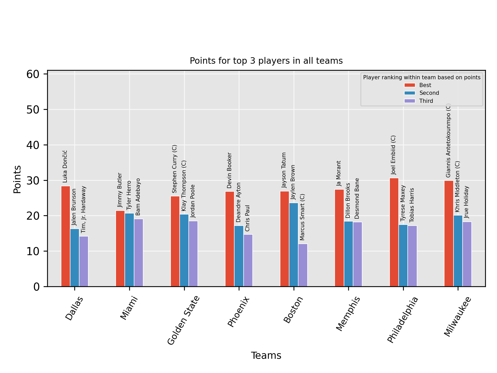

Dette prosjektet er en liten samling av Python-eksperimenter rundt web scraping. Fokus er på å hente data fra nettsider, analysere HTML, strukturere informasjon og bruke dataene videre i små programmer.
Prosjektet kombinerer flere teknikker, fra enkel HTML-parsing og URL-filtrering til databehandling med Pandas og en BFS-basert søkemotor for å finne korte veier mellom Wikipedia-artikler.
Programmer som henter og strukturerer informasjon fra Wikipedia og andre nettsider.
HTTP-forespørsler kombineres med HTML-parsing for å hente ut akkurat informasjonen som trengs.
Rå HTML blir transformert til datoer, tabeller, URL-er og andre datastrukturer som kan behandles videre.
De innsamlede dataene brukes blant annet til tabeller, visualiseringer og søk mellom Wikipedia-artikler.
Første steg i scraping-prosessen er å hente HTML fra en URL. Deretter kan BeautifulSoup brukes til å navigere i dokumentet og hente ut de elementene man faktisk er interessert i.
def get_html(url: str, params=None, output=None) -> str:
headers = {
"User-Agent":
"BorgeWebScraper/1.0 (educational project)"
}
response = requests.get(
url,
params=params,
headers=headers,
timeout=10
)
response.raise_for_status()
return response.textDette skiller selve HTTP-hentingen fra resten av scraping-logikken. Resultatet er vanlig HTML som senere kan parses og behandles.
Wiki Race-delen av prosjektet bruker lenker fra Wikipedia-artikler som en graf. Hver artikkel fungerer som en node, mens lenkene mellom artiklene fungerer som kanter.
Før lenkene brukes må de filtreres slik at vi bare beholder relevante Wikipedia-URL-er. Her brukes blant annet regulære uttrykk for å identifisere riktige lenker.
for link in soup.find_all("a", href=True):
href = link["href"]
if re.match(pattern, href):
urls.append(href)På denne måten kan HTML-dokumentet behandles som en grafstruktur i stedet for bare som tekst.
Et av de mest interessante eksperimentene er en liten Wiki Race-søkemotor. Programmet starter på én Wikipedia-artikkel og følger lenker mellom artiklene til målet er funnet. Resultatet viser både veien som ble funnet og hvor lang tid søket tok.
Dette løses med Breadth-First Search (BFS). Fordi BFS undersøker noder nivå for nivå, finner den den korteste veien i antall lenker når hver lenke har samme kostnad.
def find_path(start, finish, calls):
queue = [(start, [start])]
visited = {start}
while queue:
current, path = queue.pop(0)
if current == finish:
return path
for url in get_links(current):
if url not in visited:
visited.add(url)
queue.append((url, path + [url]))Starting wiki-race ... From: https://en.wikipedia.org/wiki/Pentacora To: https://en.wikipedia.org/wiki/Adolf_Hitler [3] [2] [1] - Search has begun - Shortest path: → Pentacora → Hemiptera → Cloning → Adolf Hitler Total time: 194.06s Time at start: 15:49:06 Time at end: 15:52:20
Scraping trenger ikke stoppe når dataene er hentet. I NBA-eksempelet brukes Wikipedia-tabeller som utgangspunkt for videre databehandling.
Dataene organiseres med Pandas, og resultatene visualiseres med Matplotlib. Dette viser en enkel pipeline fra nettside til ferdig analyse:
Nettside → HTML → Parsing → Pandas → Visualisering

Scraping kan fort føre til mange like HTTP-forespørsler under utvikling.
Derfor bruker prosjektet requests-cache for å lagre tidligere
responser lokalt.
requests_cache.install_cache(
"cache",
expire_after=3600
)Når samme URL hentes igjen innenfor cache-perioden, kan responsen hentes lokalt i stedet for å gjøre en ny nettverksforespørsel.
Dette gjør utvikling og testing raskere og reduserer samtidig unødvendig belastning på nettsidene som blir hentet.
BeautifulSoup gjør HTML-dokumentet om til en struktur som kan navigeres. Dermed kan man lete etter bestemte tagger, attributter og tekst.
html = get_html(url)
soup = BeautifulSoup(html, "html.parser")
links = soup.find_all("a", href=True)I stedet for å jobbe videre med rå HTML kan informasjonen trekkes ut og lagres i Python-strukturer som er enklere å analysere.
rows = []
for row in table.find_all("tr"):
cells = row.find_all([
"th",
"td"
])
if cells:
rows.append([
cell.get_text(strip=True)
for cell in cells
])Wiki Race viser hvordan scraping kan kombineres med en klassisk algoritme. HTML-lenkene blir i praksis grafkanter, og BFS brukes til å finne en korteste vei.
queue = [(start, [start])]
visited = {start}
while queue:
current, path = queue.pop(0)
if current == finish:
return path
for neighbour in get_links(current):
if neighbour not in visited:
visited.add(neighbour)
queue.append((neighbour, path + [neighbour]))